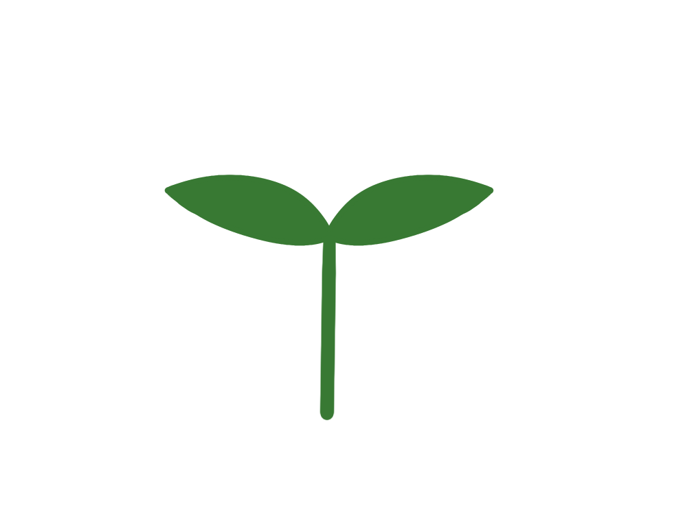

홈
지역 선택
관광 안내소
나무 키우기
친환경적인 행동 실천 사항
쓰레기 줍기
텀블러 사용하기
포장용기 직접 가져오기
대중교통 이용하기
친환경 관광지 방문하기
봉지 대신 에코백 사용하기
녹색매장 이용하기

*나무 키우기 사용 설명서
1. 실천 사항은 매일 초기화됩니다
2. 나무는 실천하는 행동들이 많아질수록 성장합니다
3. 나무의 성장 단계는 총 3단계입니다